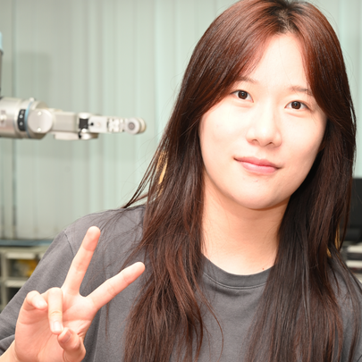
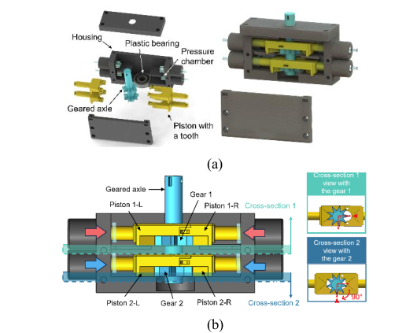

Young-Chae Son
Welcome! I'm Young-Chae Son , a Ph.D. student at Dongguk University’s Interactive Robotics Lab , supervised by Prof. Soochul Lim .
I work on Vision-Language Models (VLMs) and Vision-Language-Action (VLA) models for task planning and manipulation on real robotic systems. My research asks how a robot can make reliable decisions when visual observations alone do not reveal enough about the current task state.
Rather than simply adding more sensory inputs, I am interested in determining which information is relevant to the task at hand and how it should influence robot behavior.
Email /
CV /
Scholar /
Github

See Selectively, Act Adaptively: Dual-Level Structural Decomposition for Bimanual Robot Manipulation
Young-Chae Son , Soo-Chul Lim*
under review
A See Selectively, Act Adaptively decomposes bimanual robot manipulation into view-selective perception and interaction-aware action routing to improve robust, long-horizon task performance.
Task-Aware Modality Selection for Multimodal VLA in Robotic Manipulation
Young-Chae Son , Jung-Woo Lee, Yoon-Ji Choi, Dae-Kwan Ko, Soo-Chul Lim*
under review
A dynamic information fusion framework that selectively processes only task-relevant camera views.
ThermoAct: Thermal-Aware Vision-Language-Action Models for Robotic Perception and Decision-Making
Young-Chae Son , Dae-Kwan Ko, Yoon-Ji Choi, Soo-Chul Lim*
IEEE Robotics and Automation Letters , 2026
Temperature-Aware Framework for Robotic Perception and Decision-Making

A nonmagnetic stepper motor for the automatic evaluation of magnetic field uniformity in Helmholtz coils
Young-Chae Son , Sung-Jung Joo, Po-Gyu Park, Changjin Yun, Soo-Chul Lim*, Hyung-Kew Lee*
Conference on Precision Electromagnetic Measurements (CPEM) , 2026
Development of a Nonmagnetic Pneumatic Stepper Motor for the Automatic Evaluation of Magnetic Field Uniformity in Helmholtz Coils.
MulPlanLM: multimodal robotic task planning with vision-language models and physical feedback
Young-Chae Son , DongHan Lee, Soo-Chul Lim*
Intelligent Service Robotics, 2026
Robot task automation framework based on large language models (LLMs) that utilizes both visual and physical information.
Projects
Development of Intelligent Autonomous Manipulation Technology for Humanoids with Reduced Dependency on Real-World Data
Jul 2025 – Present
Robot Motion Generation AI based on Multimodal Vision/Tactile Information Driven by Language Model
Mar 2025 – Present
Collecting Large-scale Robot Manipulation Data in Physical Environment
Aug 2024 – Dec 2024
Patent
METHOD, APPARATUS, SYSTEM, AND COMPUTER-READABLE RECORDING MEDIUM FOR ROBOT CONTROL USING THERMAL IMAGE INFORMATION
Apr 2026
Korean Patent Application, No. 10-2026-0067117
Honors & Awards
Global Outstanding Talent Scholarship (Full Tuition Waiver for Ph.D.), Dongguk UniversitySep 2025 – Present
Best Paper Award , BK21FOUR AIMS Center Winter Conference, Dongguk University 2026
Grand Prize (1st Place) , Transfer Student Counseling Mentoring Testimonial, Tech University of Korea2024
Grand Prize (1st Place) , English Presentation Contest, Tech University of Korea2024
Presentations
Presentation, "ThermoAct: Thermal-Aware Vision-Language-Action Models..."
Feb 2026
Locomotion and Manipulation Technology Research Group, KRoC , Pyeongchang
Presentation, "ThermoAct: Thermal-Aware Vision-Language-Action Models..."
Feb 2026
Robot Learning Research Group, KRoC , Pyeongchang
Poster, "High SNR and High Frame Rate Analog Front-End ICs..."
Jul 2022
Europe Korea Conference on Science and Technology (EKC) , Marseille, France
Teaching
Teaching Assistant, Autonomous Robotics
Spring 2026
Teaching Assistant, Autonomous Robotics
Spring 2025
Teaching Assistant, Computational Mechanics
Fall 2024
Teaching Assistant, Autonomous Robotics
Spring 2024
Teaching Assistant, Fluid Mechanics
Fall 2023
{kind=link}